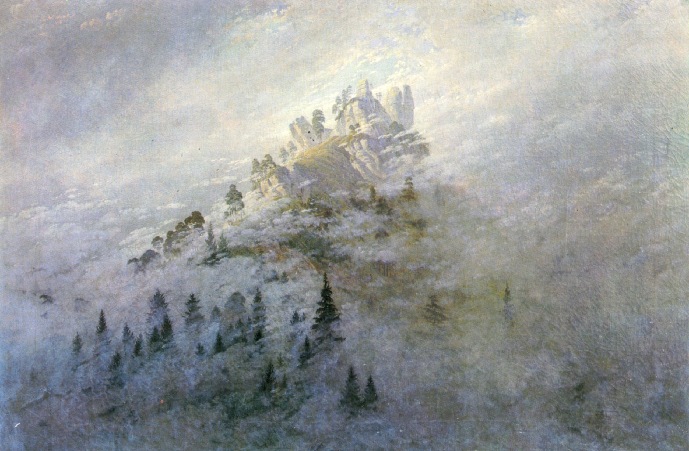

Каспар Давид Фридрих
Morgennebel im Gebirge (Утренний туман в горах), 1808

📄 Холст 🖌 масло 📏 104 x 71 см
🏛 Государственный музей Тюрингии, Хайдексбург
Происхождение
- Лишь позднее картину «Утренний туман в горах» стали приписывать Каспару Давиду Фридриху, крупнейшему художнику немецкого романтизма. В 1941 году во время работ по уборке склада замка Хайдексбург эта картина привлекла внимание; до этого она значилась в инвентаре под названием «Туман в Шварцатале». Первоначально проведённый стилистический критический анализ всё больше увеличивал вероятность того, что эта картина является работой Каспара Давида Фридриха. И последнее, но не менее важное: реставрационные исследования после Второй мировой войны подтвердили сделанную атрибуцию. Ещё в 1808 году в журнале «Прометей» появилась заметка о картине, хранящейся в Хайдексбурге. Посетитель мастерской Фридриха описал увиденную им там картину следующим образом: «Гора, окружённая облаками и возвышающаяся высоко в облаках, на самой высокой скалистой вершине которой в голубом, чистом воздухе виден крест». Из сообщения следовало, что Фридрих, должно быть, уже работал над картиной в 1808 году. Столь ранняя датировка подтверждается не в последнюю очередь тщательной манерой письма и «свежим колоритом. Характерные черты картин Фридриха этих лет. Прежде всего, тема картины указывает на мир идей и мыслей Фридриха. Хотя отдельные мотивы основаны на точном наблюдении за природой, с изображённым силуэтом горы не связано какое-либо конкретное место. Скорее, это видение свидетельствует о глубоком религиозном сознании Фридриха. Горный конус, окружённый клочьями тумана, становится всё более отчётливым в верхней трети. Окутанные туманом ели и сосны дают представление о его компактности. На самой высокой точке массива — круто поднимающейся скале, окружённой двумя скалистыми вершинами — в голубое небо устремляется едва заметный крест. Наверху туман уступил место ясной синеве неба. Именно здесь интерпретация картины наиболее чувственно передается зрителю. Только крест, олицетворяющий Христа, может открыть людям небеса. Гора символизирует христианство или, в более общем смысле, божественное начало в природе. На нём могут укорениться сосны и ели, которые, как и христиане, нуждаются в опоре. Если из моря тумана выступают только верхушки деревьев, Фридрих, возможно, намекает на когнитивные способности человеческого разума. В целом природное зрелище, созданное Каспаром Давидом Фридрихом, поражает своей реалистичностью. Для него это стало эстетическим средством, усиливающим духовное измерение этой картины.